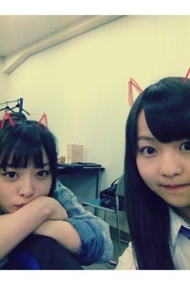

| 2012/06 05 Tue | 156回目*marika |
いつも読んでくださってる方、
初めて読んでくださった方、
コメントしてくださった方、
ありがとうございます＊
更新2回目
質問回答

........
普段はサングラスかけてるの？
 めったにかけないよ
めったにかけないよ

夏は持ち歩く:)
もうすぐ6月で梅雨に入りますが、
まりっかは長靴履く？
てか雨はすき？
ブーツみたいな長靴持ってます

そりゃ晴れてる方が嬉しいけど、
雨のにおいきらいじゃない＊
万理華ちゃんの欠点って何？？？
考えたらいっぱいあります...
まりかはどこがコリやすいの？
肩

まりかたん憧れてる芸能人とかいる？
宮崎あおいさんです＊
今好きな食べ物はなんや？
いちご。
でも結局ピーマン
 あは
あは
あは
乃木ここ見てからベビたんの
ふ抜けた顔が忘れられません。
どうしたらいいですか？
あら

しょっちゅうふ抜けたしてるらしいので、
もししてたらツッコんでください。←
万理華はミスドのドーナッツ
なにが好き( ´ ▽ ` )？
ポンデリング♪
チョコリングといちごチョコリングもすき
まりかちゃんが夏好きな理由は？
薄着すきだから
涼しい夜がいちばん良い

まりかちゃんが思う一番お嬢様だと
思うメンバーは？
いくちゃん笑
べびたん達ってメンバー同士で
相合い傘したりするの？
傘忘れたときとか入れてもらったり^^
べびたんって部屋の掃除は
こまめにする？
するようになったかな

いつのまにか片付けないと
落ち着かなくなった

学校のキャンプでキャンプファイヤーやった事ある？
小学校のときにやりましたー！
懐かしい...
べびたんはしゃちほこ以外にも
変わったポーズ出来る？
できる...うん、ん⁇
しゃちほこって変なポーズ...⁇←
まりっかは今ユッキーナとまりっか
どっちが変顔のレベル高い？
ゆきなには負ける
 ...
...
ここまで♪
.........

伊藤ちゃんず
今日の乃木坂浪漫はねねです

では今日も頑張りまりか

まりか
コメント(117)
2012/06/05 11:18